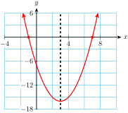
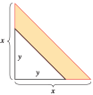

Section 3.4 Completing the Square
Not every quadratic equation can be solved easily by factoring or by extraction of roots. If the solutions are not integers, the expression \(x^2+bx+c\) may be very difficult to factor. For example, the equation \(x^2 + 3x - 1 = 0\) cannot be solved easily by either of these methods. In this section we learn a method that will solve any quadratic equation.
Subsection 3.4.1 Squares of Binomials
We can use extraction of roots to solve equations of the form
\begin{equation*}
a(x + p)^2 + q = 0
\end{equation*}
where the left side of the equation includes the square of a binomial, or a perfect square. It turns out that we can write any quadratic equation in this form.
Study the following squares of binomials.
| Square of binomial \((x+p)^2\) | \(p\) | \(2p\) | \(p^2\) |
| 1. \((x+\alert{5})^2=x^2+10x+25\) | \(\alert{5}\) | \(2(\alert{5})=10\) | \(\alert{5}^2=25\) |
| 2. \((x\alert{{}-{}3})^2=x^2-6x+9\) | \(\alert{-3}\) | \(2(\alert{-3})=-6\) | \((\alert{-3})^2=9\) |
| 3. \((x\alert{{}-{}12})^2=x^2-24x+144\) | \(\alert{-12}\) | \(2(\alert{-12})=-24\) | \((\alert{-12})^2=144\) |
In each case, the square of the binomial is a quadratic trinomial,
\begin{equation*}
(x + p)^2= x^2 + 2px + p^2
\end{equation*}
The coefficient of the linear term, \(2p\text{,}\) is twice the constant in the binomial, and the constant term of the trinomial, \(p^2\text{,}\) is its square.
What is the linear term of \(~(x+6)^2~\) ?
We would like to reverse the process and write a quadratic expression as the square of a binomial. For example, what constant term can we add to
\begin{equation*}
x^2 - 16x
\end{equation*}
to produce a perfect square trinomial? Compare the expression to the formula above:
\begin{align*}
x^2 + \alert{2p}x + p^2 \amp = (x + p)^2 \\
x^2 - \alert{16}x + ~\text{?}~ \amp = (x + ~\text{?}~)^2
\end{align*}
We see that \(~2p = -16~\text{,}\) so
\begin{equation*}
p = \frac{1}{2}(-16) = \alert{-8}~~~\text{and}~~~ p^2 = (-8)^2 = \alert{64}
\end{equation*}
We substitute these values for \(p^2\) and \(p\) into the equation to find
\begin{equation*}
x^2 - 16x + \alert{64} = (x \alert{-8})^2
\end{equation*}
You can check that in the resulting trinomial, the constant term is equal to the square of one-half the coefficient of \(x\text{.}\) In other words, we can find the constant term by taking one-half the coefficient of \(x\) and then squaring the result. Adding a constant term obtained in this way is called completing the square.
Example 3.4.2.
Complete the square by adding an appropriate constant; write the result as the square of a binomial.
- \(\displaystyle x^2 - 12x + {}\fillinmath{XXXXXX}\)
- \(\displaystyle x^2 + 5x + {}\fillinmath{XXXXXX}\)
Solution.
- One-half of \(-12\) is \(-6\text{,}\) so the constant term is \((-6)^2\text{,}\) or \(36\text{.}\) We add \(36\) to obtain\begin{align*} x^2 - 12x \alert{{}+{}36}=(x - 6)^2\amp\amp\amp {\large\blert{\underset{p^2\, = \,(-6)^2 \,=\, 36\hphantom{0}}{\stackrel {p\, = \,\frac{1}{2}(-12) \,=\, -6}{}}}} \end{align*}
- One-half of \(5\) is \(\dfrac{5}{2}\text{,}\) so the constant term is \(\left(\dfrac{5}{2}\right)^2\text{,}\) or \(\dfrac{25}{4}\text{.}\) We add \(\dfrac{25}{4}\) to obtain\begin{align*} x^2 +5x \alert{{}+{}\frac{25}{4}}=\left(x +\frac{5}{2}\right)^2 \amp\amp\amp {\large \blert{\underset{p^2\, = \,(\frac{5}{2})^2 \,= \,\frac{25}{4}}{\stackrel {p \,= \,\frac{1}{2}(5) \,=\, \frac{5}{2}~~ }{}}}} \end{align*}
Checkpoint 3.4.3. QuickCheck 2.
True or False.
- Every quadratic equation can be solved by factoring.
- Every expression of the form \(x^2+bx\) can be turned into a perfect square by adding an appropriate constant.
- The coefficient of the linear term in the expansion of \((x+p)^2\) is twice the constant term in the binomial.
- To complete the square means to square the expression.
Checkpoint 3.4.4. Practice 1.
Complete the square by adding an appropriate constant; write the result as the square of a binomial.
- \(\displaystyle x^2-18x{}+\fillinmath{XXXXXX} = (x+\fillinmath{XXXXXX})^2\)
- \(\displaystyle x^2 +9x{}+\fillinmath{XXXXXX} = (x+\fillinmath{XXXXXX} )^2\)
Hint:
- \(p=\frac{1}{2}(-18)={}\)_____ , \(p^2={}\) ______
- \(p=\frac{1}{2}(9)={}\)_____ , \(p^2={}\) ______
Solution.
- \(\displaystyle x^2 - 18x + 81 = (x - 9)^2\)
- \(\displaystyle x^2+9x+\dfrac{81}{4}=\left(x+\dfrac{9}{2}\right)^2 \)
Subsection 3.4.2 Solving Quadratic Equations by Completing the Square
Now we will use completing the square to solve quadratic equations. First, we will solve equations in which the coefficient of the squared term is 1. Consider the equation
\begin{equation*}
x^2 - 6x - 7 = 0
\end{equation*}
Step 1 To begin, we move the constant term to the other side of the equation, to get
\begin{equation*}
x^2 - 6x{ }\fillinmath{XXXXXX} = 7
\end{equation*}
Step 2 Next, we complete the square on the left. Because
\begin{equation*}
p = \frac{1}{2}(-6) = -3 ~~~\text{ and } ~~~ p^2 = (-3)^2 = 9
\end{equation*}
we add \(9\) to both sides of our equation to get
\begin{equation*}
x^2 - 6x \alert{{}+9}=7\alert{{}+9}
\end{equation*}
Step 3 The left side of the equation is now the square of a binomial, namely \((x - 3)^2\text{.}\) We write the left side in its square form and simplify the right side, which gives us
\begin{equation*}
(x - 3)^2 =16
\end{equation*}
Step 4 We can now use extraction of roots to find the solutions. Taking square roots of both sides, we get
\begin{align*}
x - 3 \amp =4 \amp\text{or}\amp\amp x - 3 \amp= -4\amp \blert{\text{Solve each equation.}}\\
x \amp =7 \amp\text{or}\amp\amp x \amp= -1
\end{align*}
The solutions are \(7\) and \(-1\text{.}\)
In Step 3, you can check that this equation is equivalent to the original one; if you expand the left side and collect like terms, you will return to the original equation:
\begin{align*}
(x-3)^2 \amp = 16 \amp \amp \blert{\text{Expand the square.}}\\
x^2-6x+9 \amp = 16 \amp \amp \blert{\text{Subtract 16 fron both sides.}}\\
x^2-6c-7 \amp = 0
\end{align*}
Note 3.4.5.

The graph of \(y = x^2 - 6x - 7\) is shown at left. Notice that the \(x\)-intercepts of the graph are \(x = 7\) and \(x = -1\text{,}\) and the parabola is symmetric about the vertical line halfway between the intercepts, at \(x = 3\text{.}\)
We can also solve \(x^2 - 6x - 7 = 0\) by factoring instead of completing the square. Of course, we get the same solutions by either method. In the next Example, we solve an equation that cannot be solved by factoring.
Example 3.4.6.
Solve \(x^2 - 4x - 3 = 0\) by completing the square.
Solution.
- We write the equation with the constant term on the right side.\begin{equation*} x^2 - 4x{}~\fillinmath{XXXXXX}{}=3 \end{equation*}
- We complete the square on the left side. The coefficient of \(x\) is \(-4\text{,}\) so\begin{equation*} p = \frac{1}{2}(-4) = -2 ~~~\text{ and } ~~~ p^2 = (-2)^2 = 4 \end{equation*}We add \(4\) to both sides of our equation:\begin{equation*} x^2 - 4x \alert{{}+4}=3\alert{{}+4} \end{equation*}
- We write the left side as the square of a binomial, and combine terms on the right side:\begin{equation*} (x - 2)^2 =7 \end{equation*}
-
Finally, we use extraction of roots to obtain\begin{align*} x - 2 \amp =\sqrt{7} \amp\text{or}\amp\amp x - 2 \amp= -\sqrt{7}\amp \blert{\text{Solve each equation.}}\\ x \amp =2+\sqrt{7} \amp\text{or}\amp\amp x \amp=2 -\sqrt{7} \end{align*}These are the exact values of the solutions. We use a calculator to find decimal approximations for each solution:\begin{equation*} 2+\sqrt{7}\approx 4.646~~~\text{and}~~~ 2-\sqrt{7}\approx -0.646 \end{equation*}These values are the \(x\)-intercepts of the graph of \(y=x^2-4x-3\text{,}\) as shown below.

Checkpoint 3.4.7. QuickCheck 3.
Put the steps for completing the square in the correct order:
- Add to both sides of the equation.
- Use extraction of roots.
- Write the left side as a perfect square.
- Write the equation with the constant term on the right side.
Checkpoint 3.4.8. Practice 2.
-
Follow the steps to solve by completing the square: \(x^2 - 1 = 3x\text{.}\)
- Write the equation with the constant on the right.
-
Complete the square on the left:\(p=\dfrac{1}{2}(-3)={}\)_____ , \(p^2={}_____ \)Add \(p^2\) to both sides.
- Write the left side as a perfect square; simplify the right side.
- Solve by extracting roots.
- Find approximations to two decimal places for the solutions.
- Graph the parabola \(y = x^2 - 3x - 1\) in the window\begin{equation*} \begin{aligned}[t] \text{Xmin} \amp = -4.7 \amp\amp \text{Xmax} = 4.7\\ \text{Ymin} \amp = -5 \amp\amp \text{Ymax} = 5 \end{aligned} \end{equation*}
Solution.
- \(\displaystyle x=\dfrac{3}{2}\pm\sqrt{\frac{13}{4}} \)
- \(x\approx -0.30\) or \(x\approx 3.30\)
Subsection 3.4.3 The General Case
Our method for completing the square works only if the coefficient of \(x^2\) is 1. If we want to solve a quadratic equation whose lead coefficient is not 1, we first divide each term of the equation by the lead coefficient.
Example 3.4.9.
Solve \(~~2x^2 - 6x - 5 = 0\text{.}\)
Solution.
- Because the coefficient of \(x^2\) is \(2\text{,}\) we must divide each term of the equation by \(2\text{.}\)\begin{equation*} x^2 - 3x - \frac{5}{2}= 0 \end{equation*}Now we proceed as before. Rewrite the equation with the constant on the right side.\begin{equation*} x^2 - 3x ~\fillinmath{XXXXXX} = \frac{5}{2} \end{equation*}
- Complete the square:\begin{equation*} p = \frac{1}{2}(-3) = \frac{-3}{2} ~~~\text{ and } ~~~ p^2 = \left(\frac{-3}{2}\right)^2 = \frac{9}{4} \end{equation*}Add \(\frac{9}{4}\) to both sides of our equation:\begin{equation*} x^2 - 3x \alert{{}+\frac{9}{4}}=\frac{5}{2}\alert{{}+\frac{9}{4}} \end{equation*}
- Rewrite the left side as the square of a binomial and simplify the right side to get\begin{equation*} \left(x - \frac{3}{2}\right)^2 =\frac{19}{4} \end{equation*}
-
Finally, extract roots and solve each equation for \(x\text{.}\)\begin{equation*} x - \frac{3}{2} =\sqrt{\frac{19}{4}} ~~~\text{ or }~~~ x - \frac{3}{2} = -\sqrt{\frac{19}{4}} \end{equation*}The solutions are \(\dfrac{3}{2}+\sqrt{\dfrac{19}{4}}\) and \(\dfrac{3}{2}-\sqrt{\dfrac{19}{4}}\text{.}\)Using a calculator, we can find decimal approximations for the solutions: \(3.679\) and \(-0.679\text{.}\)
Caution 3.4.10.
In Example 3.4.9, it is essential that we first divide each term of the equation by \(2\text{,}\) the coefficient of \(x^2\text{.}\) The following attempt at a solution is incorrect.
\begin{align*}
2x^2 - 6x \amp= 5\\
2x^2 - 6x + 9 \amp= 5 + 9\\
(2x - 3)^2 \amp= 14 ~~~ \rightarrow ~~~ \blert{\text{ Incorrect!}}
\end{align*}
You can check that \((2x - 3)^2\) is not equal to \(2x^2 - 6x + 9\text{.}\) We have not written the left side of the equation as a perfect square, so the solutions we obtain by extracting roots will not be correct.
Checkpoint 3.4.11. Practice 3.
-
Follow the steps to solve by completing the square:\begin{equation*} -4x^2- 36x-65 = 0\text{.} \end{equation*}
- Divide each term by \(-4\text{.}\) Write the equation with the constant on the right.
-
Complete the square on the left:\(p = \dfrac{1}{2}(9) ={}\)_____ , \(p^2={}\)_____Add \(p^2\) to both sides.
- Write the left side as a perfect square; simplify the right side.
- Solve by extracting roots.
- Graph \(y = -4x^2 - 36x - 65\) in the window\begin{align*} \text{Xmin} \amp = -9.4 \amp\amp \text{Xmax} = 0\\ \text{Ymin} \amp = -10 \amp\amp \text{Ymax} = 20 \end{align*}
Solution.
\(x=\dfrac{-13}{2} \text{,}\) \(x=\dfrac{-5}{2} \)
Here is a summary of the steps for solving quadratic equations by completing the square.
To Solve a Quadratic Equation by Completing the Square.
- Write the equation in standard form.
- Divide both sides of the equation by the coefficient of the quadratic term, and subtract the constant term from both sides.
- Complete the square on the left side:
- Multiply the coefficient of the first-degree term by one-half, then square the result.
- Add the value obtained in (a) to both sides of the equation.
- Write the left side of the equation as the square of a binomial. Simplify the right side.
- Use extraction of roots to finish the solution.
Exercises 3.4.4 Problem Set 3.4
Warm Up
Exercise Group.
1.
Solve by factoring
\begin{equation*}
2x^2+3x-20=0
\end{equation*}
2.
Solve by extraction of roots
\begin{equation*}
5(2x+3)^2=80
\end{equation*}
3.
Expand each square.
- \(\displaystyle (x+5)^2 = \)
- \(\displaystyle (x-6)^2 = \)
- \(\displaystyle (x-12)^2 = \)
- \(\displaystyle (x+15)^2 = \)
Skills Practice
4.
Add a term to make a square of a binomial.
- \(\displaystyle x^2-14x+\fillinmath{XXXXXX}\)
- \(\displaystyle x^2+16x+\fillinmath{XXXXXX}\)
- \(\displaystyle x^2+\fillinmath{XXXXXX}+36\)
- \(\displaystyle x^2-\fillinmath{XXXXXX}+9\)
Exercise Group.
For Problems 5 and 6, which of the expressions are squares of binomials?
5.
- \(\displaystyle x^2+4x+16\)
- \(\displaystyle x^2-5x+\dfrac{25}{4}\)
- \(\displaystyle x^2+16x+169\)
6.
- \(\displaystyle x^2-6x+12\)
- \(\displaystyle x^2+9x+81\)
- \(\displaystyle x^2-\dfrac{3}{2}x+\dfrac{9}{4}\)
Exercise Group.
For Problems 7–10, solve by completing the square.
7.
\(x^2+9x+20=0\)
8.
\(x^2=3-3x\)
9.
\(x^2+5x=5\)
10.
\(3x^2+12x+2=0\)
11.
\(2x^2-4x-3=0\)
12.
\(3x^2+x=4\)
Exercise Group.
For Problems 13–16, choose the best method, then solve the equation
13.
\(x^2-3x=40\)
14.
\((x-3)^2=40\)
15.
\(3x^2+5x=12\)
16.
\(3x^2+6x=15\)
Applications
Exercise Group.
For Problems 17–20,
- Use completing the square to find the \(x\)-intercepts of the graph.
- Find the vertex of the graph
17.
\(y=4x^2-2x-3\)
18.
\(y=2x^2-3x-5\)
19.
\(y=5x^2+8x-4\)
20.
\(y=3x^2-x-4\)
21.
The diagonal of a rectangle is 20 inches. The width of the rectangle is 4 inches shorter than its length.
- Write a quadratic equation about the length of the rectangle.
- Solve your equation to find the dimensions of the rectangle.
22.
The city park used 136 meters of fence to enclose its rectangular rock garden. The diagonal path across the middle of the garden is 52 meters long. What are the dimensions of the garden?
23.
The sail pictured is a right triangle of base and height \(x\text{.}\) It has a colored stripe along the hypotenuse and a white triangle of base and height \(y\) in the lower corner.

- Write an expression for the area of the colored stripe.
- Express the area of the stripe in factored form.
- The sail is \(7 \dfrac{1}{2}\) feet high and the white triangle is \(4 \dfrac{1}{2}\) feet high. Use your answer to part (b) to calculate mentally the area of the stripe.
24.
An hors d’oeuvres tray has radius \(x\text{,}\) and the dip container has radius \(y\text{.}\)

- Write an expression for the area for the chips (the shaded region).
- Express the area in factored form.
- The tray has radius \(8 \dfrac{1}{2}\) inches and the space for the dip has radius \(2 \dfrac{1}{2}\) inches. Use your answer to part (b) to calculate mentally the area for the chips. Express your answer as a multiple of \(\pi\text{.}\)
25.
- Write an expression for the area of the square.

- Express the area as a polynomial.
- Divide the square into four pieces whose areas are given by the terms of your answer to part (b).
26.
- Write an expression for the area of the shaded region.

- Express the area in factored form.
- By making one cut in the shaded region, rearrange the pieces into a rectangle whose area is given by your answer to part (b).
Exercise Group.
For Problems 27–30, solve by completing the square. Your answers will involve \(a,~b,~\) or \(c~\) (or a combination of these).
27.
\(x^2+2x+c=0\)
28.
\(x^2+bx-4=0\)
29.
\(x^2+bx+c=0\)
30.
\(ax^2-4x+9=0\)
Exercise Group.
For Problems 31–36, solve the formula for the indicated variable.
31.
\(V=\pi (r-3)^2h,~\text{for}~r\)
32.
\(E=\dfrac{1}{2}mv^2+mgh,~\text{for}~v\)
33.
\(V=2(s^2+t^2)w,~\text{for}~t\)
34.
\(x^2y-y^2=0,~\text{for}~y\)
35.
\((2y+3x)^2=9,~\text{for}~y\)
36.
\(4x^2-9y^2=36,~\text{for}~y\)